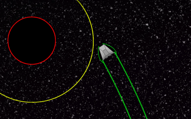
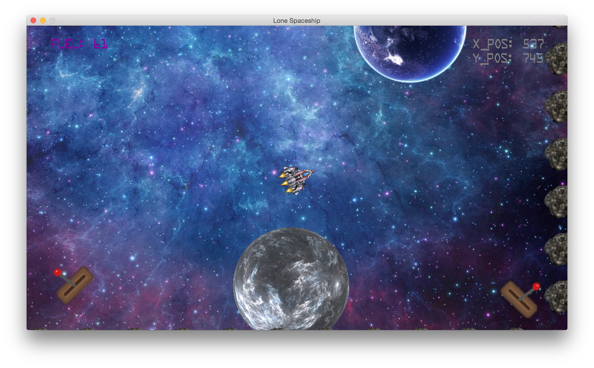

Business Model Canvas and More Prototyping
This week has been pretty slow due to the influx of other assessment work and stuff, so we haven’t really had time to meet up for continued discussion of design. We did, however, create a business model canvas for use in our poster. I think that was a great exercise and I’m glad we did it because it really solidifies a lot of the goals, milestones and endpoints we were previously unsure of. There is no wonder why business model canvases are so popular, they do their job spectacularly. They have proven to work for big businesses such as Skype and LinkedIn and I feel as though it helped us too. It made us nail things down such as which version of android/IOS we were targeting and confirming how we would be distributing it. It also made us think of things we should have thought of earlier such as customer relations and customer segments.
Our prototypes are going along nicely and we have decided to continue working on them through the Easter break. I’m continuing to be hopeful that these prototypes will help us get a design that we are really happy with in the long run, instead of regretting specific design choices too late into the project. Below are some screenshots of each of our prototypes.
 My Prototype
 Artem's Prototype
 Eamon's Prototype
Eamon's Prototype
 Benjamin's Prototype
Benjamin's Prototype